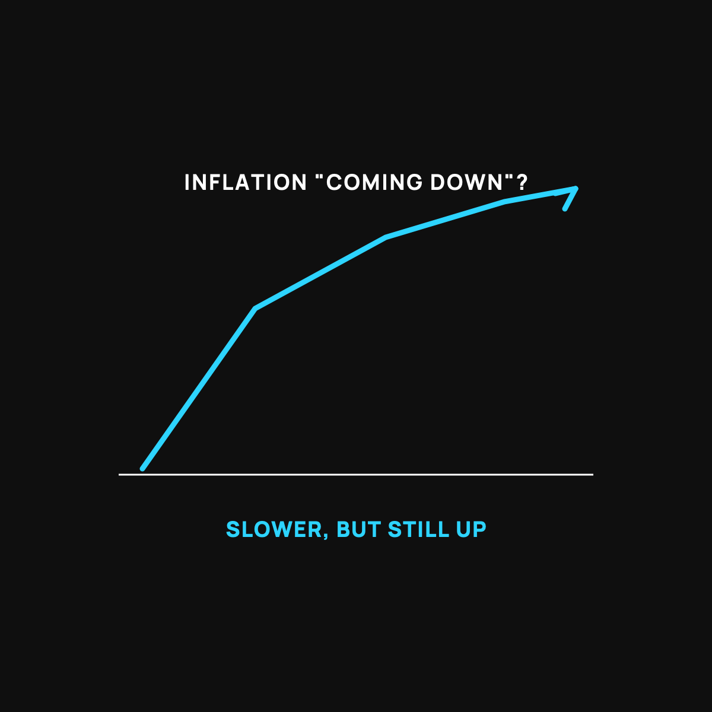

Why Prices Climb but the News Says Inflation's Down
A hill that gets less steep is still a hill you're climbing.
"Inflation is down" means prices are rising slower, not that they're falling. Inflation is the speed of the climb. The hill got less steep, but you're still going up, and the last few years of price hikes are baked in for good. Your gut is right and the news isn't lying. Budget for today's prices, not the ones you remember.

You've probably had this moment. The news says inflation is "cooling" or "coming down," and you think, great. Then you go to the store and everything still costs a fortune. You're not confused, and the news isn't lying. It's just measuring something different from what you're feeling. Here's the gap, in plain terms.
A hill that stops getting steeper is still a hill
Picture yourself hiking up a steep hill. Your legs are burning. Then the trail gets a little less steep. It's not flat. You're still climbing. You're still going up. It just isn't getting harder as fast as it was.
That's what "inflation is coming down" actually means. Inflation is the speed prices are rising, not the prices themselves. When inflation slows, prices are still going up, just not as fast. The hill got less steep. You're still climbing it.
The part that trips everyone up
Here's the piece nobody explains. Prices going up slower does not mean prices going back down. When the news cheers that inflation dropped from high to low, they're saying the climb slowed. The high prices from the last few years are still baked in. They didn't reverse. They just stopped rising as quickly.
For prices to actually fall, you'd need the opposite thing, and that comes with its own set of problems nobody really wants. So in normal times, "good inflation news" means prices are climbing gently instead of steeply. It almost never means the register will ring up less than it did last year.
Why your gut is right
So when your gut says "everything still costs too much" while the TV says inflation is down, both are true. The rate of climb slowed. The altitude is still high. You're standing higher up the hill than you were three years ago, and you never came back down.
This is the same slow leak I wrote about, just measured by its speed. Slower leak, still leaking.
What to do with this
Two things. First, stop waiting for prices to "go back to normal." Normal moved. Budget for today's prices, not the ones you remember. Second, since your dollars keep slowly buying less even in good times, it's worth keeping some of your savings in things that at least have a chance to keep pace, instead of only in cash that quietly shrinks.
The takeaway
"Inflation is down" means the hill got less steep, not that you're walking back down it. Prices rose fast, then rose slower, but they didn't reverse. Your gut isn't wrong, and the news isn't lying. They're just talking about the speed while you're feeling the altitude. Budget for where you're standing now.
Questions I get about this
Will prices ever go back to normal?
Almost never, in normal times. For prices to actually fall you'd need the opposite of inflation, and that comes with its own problems nobody wants. "Good inflation news" means prices climbing gently instead of steeply. Normal moved. Budget for where you're standing now.
What's the difference between inflation and prices?
Inflation is the rate prices are rising. Prices are the altitude. When inflation drops from high to low, the climb slowed, but the altitude stayed. That's why the register still rings up more than it did three years ago.
What should I do about it?
Two things. Stop waiting for prices to reverse and budget for today's numbers. And since dollars keep slowly buying less even in good times, keep some savings in things that at least have a chance to keep pace, instead of only in cash that quietly shrinks. The dollar's slow leak explains why.

Written by David Dewese
Normal guy with a full-time job, wife, and kids. Spent twenty years pursuing music and creative ventures before starting a family. Sharing tips and tricks on how to thrive while living on an artist's income. Not a financial advisor. More about me.
New here?
Normaltown USA is plain-English money and healthcare help for normal people, written by a regular guy with a family of four. No jargon, no hype. Start here, or read the FAQ.